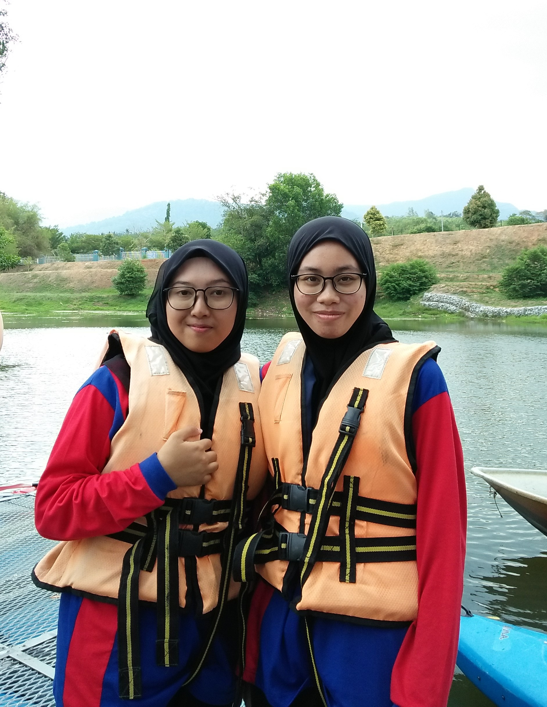

"Caught your age by life experiences, not years. Measure your life by laughter, not tears."
| On 1 December 2018, I went on a mountaineering expedition in Wang Gunung, Perlis. Wang Gunung, Perlis as high as 499.1 meters has its own specialty because its location is located on the border between the two countries, namely Malaysia and Thailand. This mountain is famous among climbers for its relatively challenging trails with its sharp and steep rock paths. I with the Kembara club and the Commander club UiTM Kedah have managed to reach the top of the mountain. The expedition started at 9 a.m. and ended at 6 p.m. This was my first experience in mountain climbing. If you want to know more about this mountain, you can read it here Wang Gunung | |
| On March 16, 2019, once again I had the opportunity to participate in an extreme activity that is climbing Puteri Mandi, Kedah. Putri Mandi Waterfall is located at the foot of Mount Jerai among the waterfalls that offer quite a beautiful view, a location that is often used as a training or jungle tracking area and a leisure location that is quite popular among the locals. During the climb you will encounter a variety of interesting species of flora and fauna. I and other members of the Kembara club had to climb 3KM and take approximately 40 minutes along the route that starts at Titi Hayun.If you want to know more about Puteri Mandi, you can read it here Puteri Mandi | |
|  | |
| I had the opportunity to 'kayak' at Tasik Merbok UiTM Kedah. My first experience. Very exciting and I can not forget. | |
| I once participated in a volunteer program at a care center for the elderly, Pusat Jagaan Al-Fikrah Malaysia, Kg Sg Sekamat, Kajang. I and my school friends do various activities with the residents of this elderly care center such as gotong-royong. | |